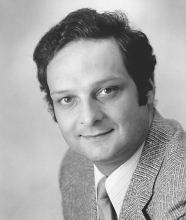

Please note: the AAS Obituaries are temporarily being hosted on this website while their full content is being ingested into the PubPub publishing platform newly adopted by the Bulletin of the American Astronomical Society. When the migration is complete, your existing links will take you to the final, migrated content. Contact peter.williams@aas.org with any questions.
Philip Edward Seiden (1934-2001)
Philip Edward Seiden died on 21 April 2001 from congestive heart failure that followed an intensive treatment for cancer in the1980s. He joined our astronomical community when he was 44, after a successful career as a solid state physicist and IBM manager. He worked on galactic structure from 1978 to 1989 and on the structure of sunspot groups from 1992 to 1996.
Philip was born in Troy, New York, on 25 December 1934, to Herman and Freida Seiden. They moved to Chicago when Philip was 3. His father was an electrical engineer and inventor, holding many patents including one for the payout device in slot machines manufactured by Bally Corporation, where he was director of research and development. Philip received his MS in 1956 from the University of Chicago and PhD in Physics in 1960 at Stanford, where he worked on magnetic resonance in yttrium iron garnets under John Shaw. After joining the Research Division of IBM in 1960, he worked on magnetism, superconductivity, and organic solids, becoming the first person to receive a patent in the new field of molecular electronics in 1974. He rose through management ranks quickly, becoming director of the physical sciences department in 1972 and director of general sciences in 1976.
During this period Philip spent a year at the Technion in Haifa, Israel where he collaborated with Lawrence Schulman on cellular automaton studies of Conway's Game of Life, producing a publication in 1978 on phase transitions and the relevant thermodynamics. When an astronomy post-doc in his department, Humberto Gerola, noted the resemblance between propagating star formation and the spreading patterns in cellular automata, Philip resigned his management position to work with Humberto on galaxies. They considered the on and off bits of a cellular automaton in a circular shearing grid to represent active and inactive sites of star formation, and showed how numerous local events can combine over time to produce long and persistent spiral arms. This idea progressed for another six years, leading the two of them, along with Schulman (now at Clarkson University in Potsdam, New York), to propose explanations for galactic Hubble type, exponential disks, and star formation rates. Philip’s interactions with Debra Meloy Elmegreen, who followed Humberto as an IBM post-doc, led to the development of spiral arm classes.
Philip immersed himself completely in these models, inviting other astronomers to IBM for conferences or visits, attending international meetings, and giving talks around the country. He was the first to model star formation in holistic terms, introducing feedback and chaos to whole galactic gas systems, discussing percolation and phase transitions—useful concepts from his physics heritage—and using the results to explain disk evolution. Perhaps Philip’s most influential papers focus on the large-scale variability of star formation in dwarf galaxies, a concept which he introduced in 1980 long before dwarfs were as fashionable as they are today. Movies of his propagating star formation models ran at the Smithsonian National Air and Space Museum for many years, illustrating to the public how percolation theory can be applied to galactic star formation.
From the beginning of this research on galactic structures, Philip recognized the importance of data visualization, and built a world-class system at IBM for the processing of galactic images. This included a scanning microdensitometer for photographic plates taken by Dr. Debra Elmegreen at the Mt. Palomar telescopes, new image processing software that was available at IBM long before the advent of personal computers, and an office-size color printing machine that made slides from digitized images. Philip's goal was to enhance galaxy images, pulling out details about star formation and density waves that could not be seen on normal photographs. His first results came in 1982 when he published two-dimensional Fourier transform images of whole galaxies. Among his most important contributions was a paper written in 1989 with Bruce and Debra Elmegreen using symmetry properties of near-infrared images to prove the existence of spiral wave modes that had been predicted by C.C. Lin and his group at MIT.
In 1992, Philip published his first of two papers on solar active regions with Donat Wentzel of the University of Maryland. The models were similar to those used for galactic structure in that they involved cellular automata and percolation, but this time what percolated was magnetic flux. The model again simplified a very complex system, but even so, Philip obtained realistic size and age distributions for sunspots.
Midway through Philip's life as an astronomer, he met Dr. Franco Celada, a professor of Immunology at the University of Genoa, Italy, working at the Hospital for Joint Diseases, New York University. Philip believed that his knowledge of physics, phase transitions, percolation theory and the application of computer modeling would be very useful in this field. In 1992, they produced a computer model that uses cellular automata to simulate the immune system. The model mimics the random encounters and stimulated interactions among various parts of the immune system that are exposed to antigens. It was one of the first models that could run biological experiments, and eventually formed the basis of a Corporation that Philip started, called IMMSIM, an acronym for Immune Simulation. The IMMSIM model, for example, can predict the efficiency of a vaccine. As a result, biomedical researchers from around the world sent Philip their theories about potential vaccines for "in machina" testing (as opposed to the usual "in vivo" and "in vitro" tests). Philip was happy to think that IMMSIM probably saved the lives of thousands of mice.
Philip continued his research in immunology after retiring from IBM in 1997, both as a consultant to the Hospital for Joint Diseases and as an adjunct faculty member at Princeton University. One of IMMSIM's most important results during this time was an illustration of the way in which cell-based and antibody-based responses of the immune system combine and sometimes compete to offer the most effective defense. IMMSIM sometimes found that the immune system failed because of this competition, leading Philip and his collaborators at Princeton to understand autoimmunity in a novel way, which they called competitive tolerance. Philip became a popular teacher at Princeton, using IMMSIM to illustrate how the immune system works in both a graduate course and a freshman seminar. His courses were consistently rated the best his students ever had.
Philip Seiden had three fulfilling and productive careers. He used his vast knowledge of physics and unusual intellectual capacity to understand and drive forward a new field of research every decade. He was dynamic, outgoing, and eclectic, enjoying travel, linguistics, gastronomy, sailing, and intellectual debate on a seemingly endless list of topics. He married his high school sweetheart, Lois. After they moved to New York, Lois began a successful career in real estate, a business also followed by their son Mark. Lois lives in Briarcliff Manor, NY, while Mark, his wife Amy and their three children live in nearby Ossining. Philip and Lois’ second son, Jeffrey, lives in Vermont.
Obituary written by: Bruce Elmegreen (IBM T. J. Watson Research Center)
BAAS Citation: BAAS, 2002, 34, 1378
SAO/NASA ADS Bibcode: 2002BAAS...34.1378E